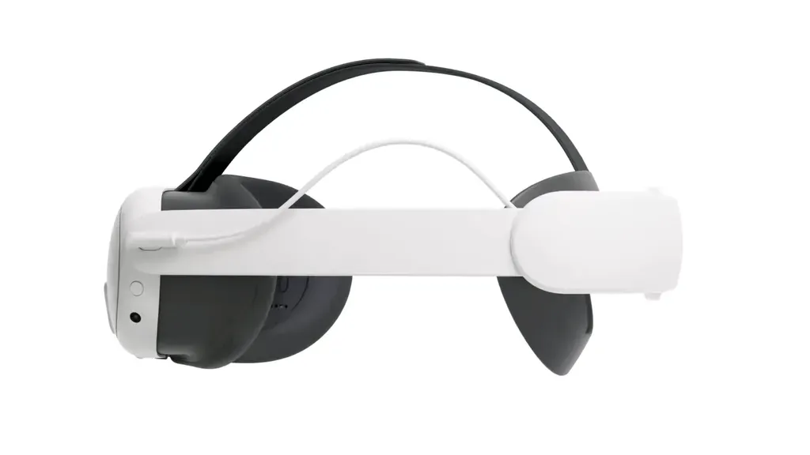

Meta Quest 3 — Basics
Quick reference for headset fit, power, lens (IPD) adjustment, and volume.
Head Strap Fit

Rear Dial — tighten/loosen
Top Strap — height/angle
- Before wearing, loosen the rear dial.
- Place the headset, then turn the dial until snug (not tight).
- Adjust the top strap so the display sits comfortably and the image is centered.
Power

Power Button
Battery Strap
- Turn On: Hold the power button until the screen lights up.
- Sleep/Wake: Tap the power button once.
- Turn Off: Hold, then confirm on-screen to power down.
- Battery Strap: Extends playtime and balances weight.
Lens (IPD) Adjustment

IPD Wheel — lens spacing
- Rotate wheel to move lenses closer or farther apart.
- Stop when text/edges look crisp and your eyes feel relaxed.
- If sharing a headset, each person should adjust the lenses for themselves.
Volume

Volume + / −
- Buttons are on the underside toward the right.
- Press + to increase, − to decrease.
- On‑screen indicator shows current level.